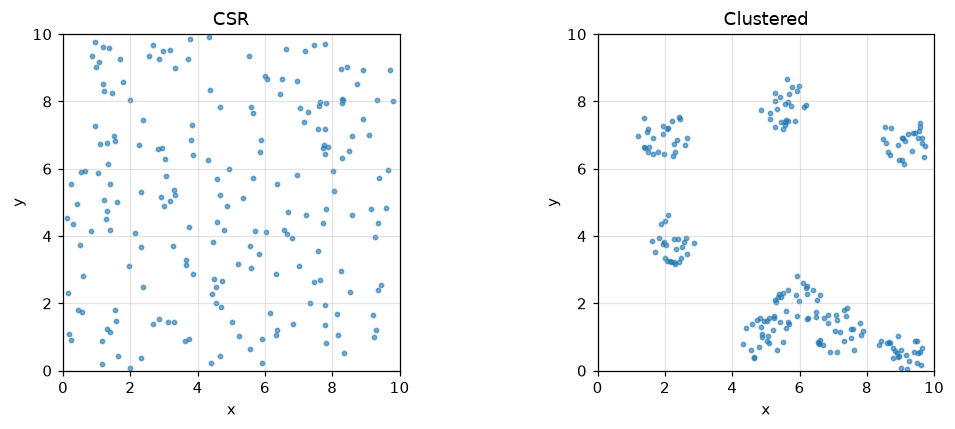
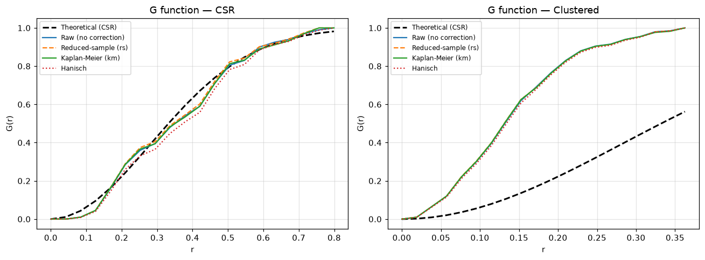
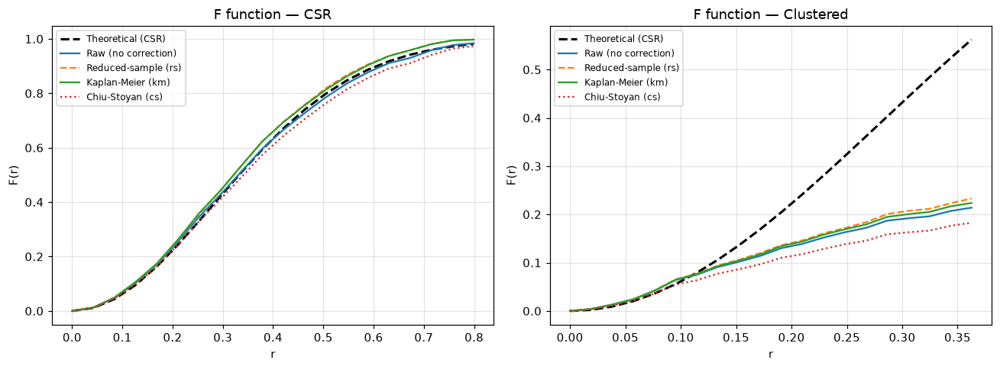
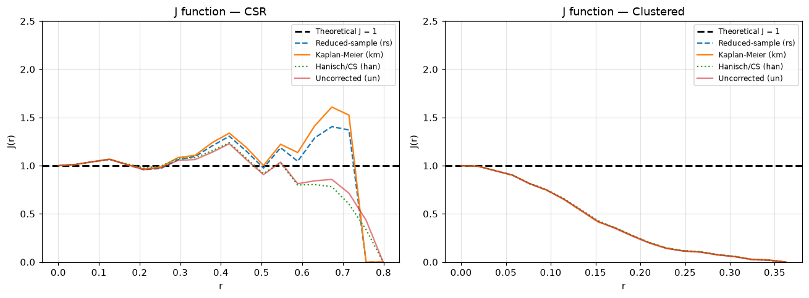
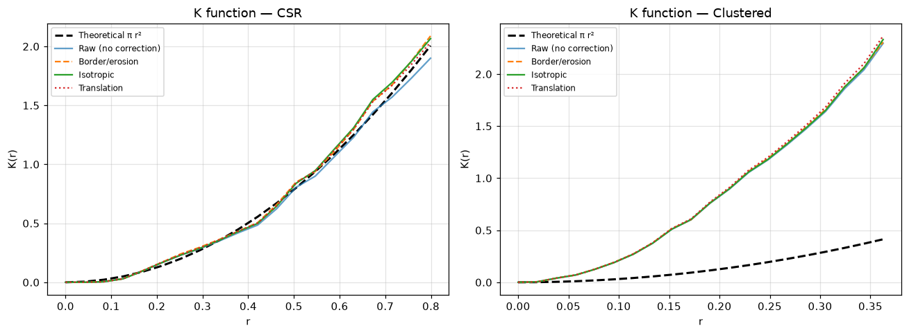
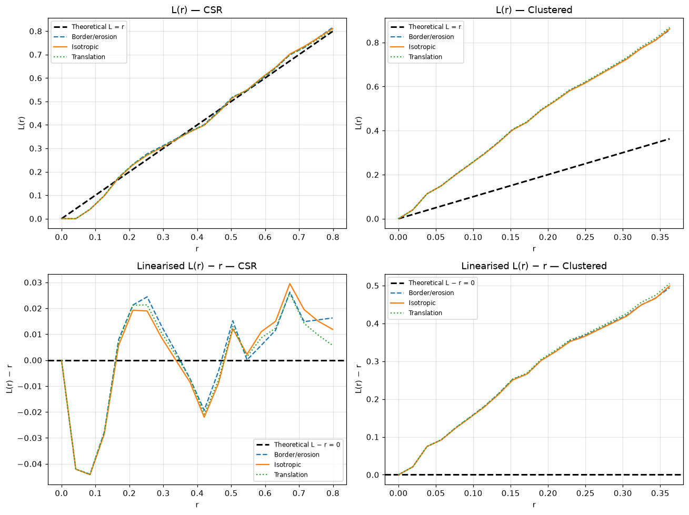
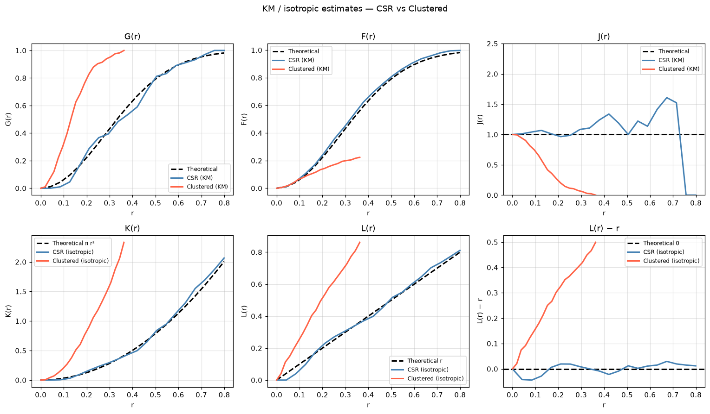

Edge corrections for G, F, J, K, and L functions¶
When estimating spatial summary functions from data observed in a bounded window W, points near the boundary cause bias:
For the G function (nearest-neighbour distance) and F function (empty-space distance), boundary truncation makes observed distances too large, so the estimated CDFs rise too slowly.
For Ripley’s K (and its normalised form L), pairs involving points near the boundary miss partners outside W, causing K to be underestimated.
The J function inherits the combined G / F bias.
pointpats implements the same suite of corrections used by the R package
spatstat.
Function |
Available corrections |
|---|---|
G |
|
F |
|
J |
|
K |
|
L |
same as K |
Pass edge_correction='all' to compute all available corrections at once
and receive a named tuple (GEstResult, FEstResult, JEstResult,
KEstResult, LEstResult) as the return value.
Pass edge_correction=None (or a named correction string) to get a plain
(support, values) 2-tuple — the backward-compatible form.
Note: Omitting
edge_correctionraises aFutureWarningbecause the default will change in the next major version. The current default returns the uncorrected estimator. Passedge_correction=Noneexplicitly to silence the warning, oredge_correction='all'to opt in to the named-tuple API now.
import matplotlib.pyplot as plt
import numpy as np
import shapely
from pointpats import f, g, j, k, l
from pointpats.random import cluster_poisson, poisson
plt.rcParams.update({"figure.dpi": 110, "axes.grid": True, "grid.alpha": 0.35})
1. Point patterns¶
We work with a 10 × 10 square window and generate two patterns:
CSR — homogeneous Poisson process (200 points, intensity λ = 2 per unit²)
Clustered — Poisson cluster process (200 points in 8 clusters)
For a homogeneous Poisson process with intensity λ the theoretical functions are: $\(G(r) = F(r) = 1 - e^{-\lambda \pi r^2}, \quad J(r) = 1, \quad K(r) = \pi r^2, \quad L(r) = r.\)$
rng_seed = 42
poly = shapely.box(0, 0, 10, 10)
hull_arr = np.array([0.0, 0.0, 10.0, 10.0])
coords_csr = poisson(hull_arr, size=(200, 1), rng=rng_seed).squeeze()
coords_clu = cluster_poisson(hull_arr, size=(200, 1), n_seeds=8, rng=rng_seed).squeeze()
fig, axes = plt.subplots(1, 2, figsize=(10, 4))
for ax, coords, title in zip(axes, [coords_csr, coords_clu], ["CSR", "Clustered"]):
ax.scatter(coords[:, 0], coords[:, 1], s=8, alpha=0.6)
ax.set_xlim(0, 10)
ax.set_ylim(0, 10)
ax.set_aspect("equal")
ax.set_title(title)
ax.set_xlabel("x")
ax.set_ylabel("y")
plt.tight_layout()
plt.show()

2. Ripley’s G function¶
2.1 Available corrections¶
Name |
Argument |
Description |
|---|---|---|
Raw |
|
Uncorrected ECDF of NNDs — biased downward |
Reduced-sample |
|
Include only events whose NND guard-band fits inside W; support is clipped to the erosion threshold |
Kaplan-Meier |
|
Treats each event as censored at its distance-to-boundary; uses KM product-limit estimator |
Hanisch |
|
Weights each event by the inverse area of the eroded window at its NND |
Pass edge_correction='all' to obtain a GEstResult named tuple with all
four estimates plus the CSR theoretical curve:
g_csr = g(coordinates, hull=poly, edge_correction='all')
Omitting edge_correction raises a FutureWarning and currently returns
the uncorrected estimator. In the next major release the default will change
to return all corrections.
g_csr = g(coords_csr, hull=poly, edge_correction="all")
g_clu = g(coords_clu, hull=poly, edge_correction="all")
print(type(g_csr)) # GEstResult
print(g_csr._fields) # ('support', 'theo', 'raw', 'rs', 'km', 'hanisch')
print(f"support length: {len(g_csr.support)}")
<class 'pointpats.distance_statistics.GEstResult'>
('support', 'theo', 'raw', 'rs', 'km', 'hanisch')
support length: 20
fig, axes = plt.subplots(1, 2, figsize=(12, 4.5))
for ax, gr, title in zip(axes, [g_csr, g_clu], ["CSR", "Clustered"]):
ax.plot(gr.support, gr.theo, "k--", lw=2, label="Theoretical (CSR)")
ax.plot(gr.support, gr.raw, lw=1.5, label="Raw (no correction)")
ax.plot(gr.support, gr.rs, lw=1.5, label="Reduced-sample (rs)", linestyle="--")
ax.plot(gr.support, gr.km, lw=1.5, label="Kaplan-Meier (km)")
ax.plot(gr.support, gr.hanisch, lw=1.5, label="Hanisch", linestyle=":")
ax.set_xlabel("r")
ax.set_ylabel("G(r)")
ax.set_title(f"G function — {title}")
ax.legend(fontsize=8)
plt.tight_layout()
plt.show()

What to observe:
For the CSR pattern all corrected estimates track the theoretical curve closely.
The raw estimate rises slightly below the theoretical, reflecting the downward bias from unobserved neighbours outside W.
The reduced-sample (rs) estimate is only defined up to the erosion threshold (the largest radius at which at least one interior guard point remains), which is why that curve terminates earlier than the others.
For the clustered pattern all corrected G curves rise steeply at short distances, confirming that events are closer to each other than expected under CSR.
2.2 Requesting a single correction¶
Pass edge_correction= explicitly to get a plain (support, values) tuple:
support, g_km = g(coords_csr, hull=poly, edge_correction="km")
print("type:", type(support), type(g_km))
print("support[:5]:", np.round(support[:5], 4))
print("G_km[:5]: ", np.round(g_km[:5], 4))
type: <class 'numpy.ndarray'> <class 'numpy.ndarray'>
support[:5]: [0. 0.0421 0.0841 0.1262 0.1682]
G_km[:5]: [0. 0. 0.01 0.0454 0.1629]
3. Ripley’s F function¶
3.1 Available corrections¶
Name |
Argument |
Description |
|---|---|---|
Raw |
|
Uncorrected ECDF of empty-space distances from random test points |
Reduced-sample |
|
Include only test points whose guard-band fits inside W |
Kaplan-Meier |
|
Test-point distances censored at distance-to-boundary |
Chiu-Stoyan |
|
Weights each test point by the inverse fraction of its distance-disk that lies inside W |
F requires random test points. Pass rng= for reproducible results.
Use a seed different from the one used to generate the point pattern
to avoid artificial coincidences between test locations and events.
f_csr = f(coords_csr, hull=poly, rng=99, edge_correction="all")
f_clu = f(coords_clu, hull=poly, rng=99, edge_correction="all")
print(type(f_csr)) # FEstResult
print(f_csr._fields) # ('support', 'theo', 'raw', 'rs', 'km', 'cs')
<class 'pointpats.distance_statistics.FEstResult'>
('support', 'theo', 'raw', 'rs', 'km', 'cs')
fig, axes = plt.subplots(1, 2, figsize=(12, 4.5))
for ax, fr, title in zip(axes, [f_csr, f_clu], ["CSR", "Clustered"]):
ax.plot(fr.support, fr.theo, "k--", lw=2, label="Theoretical (CSR)")
ax.plot(fr.support, fr.raw, lw=1.5, label="Raw (no correction)")
ax.plot(fr.support, fr.rs, lw=1.5, label="Reduced-sample (rs)", linestyle="--")
ax.plot(fr.support, fr.km, lw=1.5, label="Kaplan-Meier (km)")
ax.plot(fr.support, fr.cs, lw=1.5, label="Chiu-Stoyan (cs)", linestyle=":")
ax.set_xlabel("r")
ax.set_ylabel("F(r)")
ax.set_title(f"F function — {title}")
ax.legend(fontsize=8)
plt.tight_layout()
plt.show()

What to observe:
Under CSR the corrected F estimates agree well with the theoretical curve.
The raw F rises more slowly than theory, again reflecting boundary truncation.
For the clustered pattern F rises more slowly than under CSR at short distances: events are concentrated in clusters, leaving large empty-space gaps between them, so test points have to travel farther to reach an event.
4. The J function¶
4.1 Definition and corrections¶
Van Lieshout & Baddeley (1996) defined:
Under CSR, \(J(r) = 1\) for all \(r\). Clustering produces \(J < 1\); regularity produces \(J > 1\).
Argument |
G component |
F component |
|---|---|---|
|
G rs |
F rs |
|
G km |
F km |
|
G Hanisch |
F Chiu-Stoyan |
|
G raw |
F raw |
J is truncated where either \(G(r) \approx 1\) or \(F(r) \approx 1\) (the ratio
becomes unstable). Use truncate=False to keep all values.
j_csr = j(coords_csr, hull=poly, rng=99, edge_correction="all")
j_clu = j(coords_clu, hull=poly, rng=99, edge_correction="all")
print(type(j_csr)) # JEstResult
print(j_csr._fields) # ('support', 'theo', 'rs', 'km', 'han', 'un')
<class 'pointpats.distance_statistics.JEstResult'>
('support', 'theo', 'rs', 'km', 'han', 'un')
fig, axes = plt.subplots(1, 2, figsize=(12, 4.5))
for ax, jr, title in zip(axes, [j_csr, j_clu], ["CSR", "Clustered"]):
ax.axhline(1.0, color="k", lw=2, linestyle="--", label="Theoretical J = 1")
ax.plot(jr.support, jr.rs, lw=1.5, label="Reduced-sample (rs)", linestyle="--")
ax.plot(jr.support, jr.km, lw=1.5, label="Kaplan-Meier (km)")
ax.plot(jr.support, jr.han, lw=1.5, label="Hanisch/CS (han)", linestyle=":")
ax.plot(jr.support, jr.un, lw=1.5, label="Uncorrected (un)", alpha=0.6)
ax.set_xlabel("r")
ax.set_ylabel("J(r)")
ax.set_ylim(0, 2.5)
ax.set_title(f"J function — {title}")
ax.legend(fontsize=8)
plt.tight_layout()
plt.show()

What to observe:
Under CSR all J estimates hover near 1, as expected.
For the clustered pattern J drops clearly below 1 at short distances, confirming aggregation.
The uncorrected estimate (
un) tends to be closer to 1 than the corrected versions because the biases in G and F partially cancel in the ratio — but this cancellation is coincidental and pattern-dependent.
5. Ripley’s K function¶
5.1 Available corrections¶
Name |
Argument |
Description |
|---|---|---|
Raw |
|
Uncorrected count-based estimator — biased downward |
Border / erosion |
|
Include only pairs where the focal point is more than r from the boundary (guard-point method); support clipped to erosion threshold |
Isotropic |
|
Weights each pair by the inverse fraction of the circle arc that lies inside W; no support truncation |
Translation |
|
Weights each pair by the inverse area of the intersection of W with W shifted by the inter-point vector |
Pass edge_correction='all' to obtain a KEstResult named tuple with
fields (support, theo, border, isotropic, translate). Under CSR the
theoretical curve is \(K(r) = \pi r^2\):
k_csr = k(coordinates, hull=poly, edge_correction='all')
Omitting edge_correction raises a FutureWarning and currently returns
the uncorrected estimator. In the next major release the default will change
to return all corrections.
k_csr = k(coords_csr, hull=poly, edge_correction="all")
k_clu = k(coords_clu, hull=poly, edge_correction="all")
print(type(k_csr)) # KEstResult
print(k_csr._fields) # ('support', 'theo', 'border', 'isotropic', 'translate')
print(f"support length: {len(k_csr.support)}")
<class 'pointpats.distance_statistics.KEstResult'>
('support', 'theo', 'border', 'isotropic', 'translate')
support length: 20
fig, axes = plt.subplots(1, 2, figsize=(12, 4.5))
for ax, kr, title in zip(axes, [k_csr, k_clu], ["CSR", "Clustered"]):
ax.plot(kr.support, kr.theo, "k--", lw=2, label="Theoretical π r²")
_, k_raw = k(coords_csr if title == "CSR" else coords_clu,
hull=poly, edge_correction=None)
ax.plot(kr.support, k_raw, lw=1.5, label="Raw (no correction)", alpha=0.7)
ax.plot(kr.support, kr.border, lw=1.5, label="Border/erosion", linestyle="--")
ax.plot(kr.support, kr.isotropic, lw=1.5, label="Isotropic")
ax.plot(kr.support, kr.translate, lw=1.5, label="Translation", linestyle=":")
ax.set_xlabel("r")
ax.set_ylabel("K(r)")
ax.set_title(f"K function — {title}")
ax.legend(fontsize=8)
plt.tight_layout()
plt.show()

What to observe:
Under CSR all corrected K estimates follow \(\pi r^2\) closely.
The raw (uncorrected) K rises below the theoretical because pairs near the boundary are systematically undercounted.
The border estimate is clipped at the erosion threshold (the largest r for which a guard region still exists inside W).
Isotropic and translation corrections are available at all distances and agree well with each other.
For the clustered pattern K rises above the CSR theoretical curve, indicating more pairs at short distances than expected under randomness.
6. Ripley’s L function¶
L is defined as: $\(L(r) = \sqrt{\frac{K(r)}{\pi}}\)$
Under CSR \(L(r) = r\). The linearised form \(L(r) - r\) centres on zero, making deviations from CSR easier to read.
l() accepts the same edge_correction values as k(). Pass
edge_correction='all' to return a LEstResult named tuple with the
same fields as KEstResult.
l_csr = l(coords_csr, hull=poly, edge_correction="all")
l_clu = l(coords_clu, hull=poly, edge_correction="all")
l_lin_csr = l(coords_csr, hull=poly, edge_correction="all", linearized=True)
l_lin_clu = l(coords_clu, hull=poly, edge_correction="all", linearized=True)
print(type(l_csr)) # LEstResult
print(l_csr._fields) # ('support', 'theo', 'border', 'isotropic', 'translate')
<class 'pointpats.distance_statistics.LEstResult'>
('support', 'theo', 'border', 'isotropic', 'translate')
fig, axes = plt.subplots(2, 2, figsize=(12, 9))
# Top row: L(r) vs r
for ax, lr, title in zip(axes[0], [l_csr, l_clu], ["CSR", "Clustered"]):
ax.plot(lr.support, lr.theo, "k--", lw=2, label="Theoretical L = r")
ax.plot(lr.support, lr.border, lw=1.5, label="Border/erosion", linestyle="--")
ax.plot(lr.support, lr.isotropic, lw=1.5, label="Isotropic")
ax.plot(lr.support, lr.translate, lw=1.5, label="Translation", linestyle=":")
ax.set_xlabel("r")
ax.set_ylabel("L(r)")
ax.set_title(f"L(r) — {title}")
ax.legend(fontsize=8)
# Bottom row: linearised L(r) − r
for ax, lr, title in zip(axes[1], [l_lin_csr, l_lin_clu], ["CSR", "Clustered"]):
ax.axhline(0, color="k", lw=2, linestyle="--", label="Theoretical L − r = 0")
ax.plot(lr.support, lr.border, lw=1.5, label="Border/erosion", linestyle="--")
ax.plot(lr.support, lr.isotropic, lw=1.5, label="Isotropic")
ax.plot(lr.support, lr.translate, lw=1.5, label="Translation", linestyle=":")
ax.set_xlabel("r")
ax.set_ylabel("L(r) − r")
ax.set_title(f"Linearised L(r) − r — {title}")
ax.legend(fontsize=8)
plt.tight_layout()
plt.show()

What to observe:
Under CSR the linearised \(L(r) - r\) fluctuates around zero for all corrections; systematic positive excursions would indicate clustering, negative excursions would indicate regularity.
For the clustered pattern \(L(r) - r\) rises well above zero at short to moderate distances — the signature of aggregation.
Isotropic and translation corrections generally agree closely; the border correction terminates early at the erosion threshold.
7. Side-by-side comparison — KM estimates¶
The Kaplan-Meier estimate is a natural general-purpose default: it uses all data, requires no spatial geometry beyond the window boundary, and is consistent. The panel below compares KM estimates for G, F, J, K, and L across both patterns.
fig, axes = plt.subplots(2, 3, figsize=(14, 8))
labels = ["CSR", "Clustered"]
colors = ["steelblue", "tomato"]
# --- row 0: G, F, J ---
pairs_row0 = [(g_csr, g_clu), (f_csr, f_clu), (j_csr, j_clu)]
ylabels_row0 = ["G(r)", "F(r)", "J(r)"]
for ax, (r_csr, r_clu), ylabel in zip(axes[0], pairs_row0, ylabels_row0):
if ylabel == "J(r)":
ax.axhline(1.0, color="k", lw=2, linestyle="--", label="Theoretical")
else:
ax.plot(r_csr.support, r_csr.theo, "k--", lw=2, label="Theoretical")
for r, label, color in zip([r_csr, r_clu], labels, colors):
ax.plot(r.support, getattr(r, "km"), lw=2, label=f"{label} (KM)", color=color)
ax.set_xlabel("r")
ax.set_ylabel(ylabel)
ax.set_title(ylabel)
ax.legend(fontsize=8)
if ylabel == "J(r)":
ax.set_ylim(0, 2.5)
# --- row 1: K, L, L-linearised ---
for ax, (r_csr, r_clu), ylabel, field in zip(
axes[1],
[(k_csr, k_clu), (l_csr, l_clu), (l_lin_csr, l_lin_clu)],
["K(r)", "L(r)", "L(r) − r"],
["isotropic", "isotropic", "isotropic"],
):
if ylabel == "K(r)":
ax.plot(r_csr.support, r_csr.theo, "k--", lw=2, label="Theoretical π r²")
elif ylabel == "L(r)":
ax.plot(r_csr.support, r_csr.theo, "k--", lw=2, label="Theoretical r")
else:
ax.axhline(0, color="k", lw=2, linestyle="--", label="Theoretical 0")
for r, label, color in zip([r_csr, r_clu], labels, colors):
ax.plot(r.support, getattr(r, field), lw=2,
label=f"{label} (isotropic)", color=color)
ax.set_xlabel("r")
ax.set_ylabel(ylabel)
ax.set_title(ylabel)
ax.legend(fontsize=8)
# hide unused panel
axes[1, 2].set_visible(True)
plt.suptitle("KM / isotropic estimates — CSR vs Clustered", y=1.01)
plt.tight_layout()
plt.show()

8. Requesting individual corrections¶
Pass edge_correction= explicitly to get a plain (support, values) tuple
rather than the full named tuple.
# G — single corrections
s, g_raw = g(coords_csr, edge_correction=None)
s, g_rs = g(coords_csr, hull=poly, edge_correction="rs")
s, g_km = g(coords_csr, hull=poly, edge_correction="km")
s, g_hanisch = g(coords_csr, hull=poly, edge_correction="hanisch")
# F — single corrections
s, f_raw = f(coords_csr, edge_correction=None, rng=99)
s, f_rs = f(coords_csr, hull=poly, edge_correction="rs", rng=99)
s, f_km = f(coords_csr, hull=poly, edge_correction="km", rng=99)
s, f_cs = f(coords_csr, hull=poly, edge_correction="cs", rng=99)
# J — single corrections
s, j_rs = j(coords_csr, hull=poly, edge_correction="rs", rng=99)
s, j_km = j(coords_csr, hull=poly, edge_correction="km", rng=99)
s, j_han = j(coords_csr, hull=poly, edge_correction="han", rng=99)
s, j_un = j(coords_csr, hull=poly, edge_correction="un", rng=99)
# K — single corrections (no rng needed)
s, k_raw = k(coords_csr, edge_correction=None)
s, k_bor = k(coords_csr, hull=poly, edge_correction="border")
s, k_iso = k(coords_csr, hull=poly, edge_correction="isotropic")
s, k_tra = k(coords_csr, hull=poly, edge_correction="translate")
# L — single corrections
s, l_iso = l(coords_csr, hull=poly, edge_correction="isotropic")
s, l_tra = l(coords_csr, hull=poly, edge_correction="translate")
s, l_lin = l(coords_csr, hull=poly, edge_correction="isotropic", linearized=True)
print("K isotropic[:3]:", np.round(k_iso[:3], 4))
print("L isotropic[:3]:", np.round(l_iso[:3], 4))
print("L linearised[:3]:", np.round(l_lin[:3], 4))
K isotropic[:3]: [0. 0. 0.005]
L isotropic[:3]: [0. 0. 0.0399]
L linearised[:3]: [ 0. -0.0421 -0.0442]
/var/folders/n0/xbnn2f2d0ybbp2c_bf_9ztzw0000gn/T/ipykernel_10238/3969019792.py:17: UserWarning: requested None bins to evaluate the J function, but it reaches infinity at d=0.7570, meaning only 19 bins will be used to characterize the J function.
s, j_un = j(coords_csr, hull=poly, edge_correction="un", rng=99)
The individual corrections returned by edge_correction='all' and by
explicit single-correction calls are numerically identical (same RNG state,
same support grid):
g_default = g(coords_csr, hull=poly, support=s, edge_correction="all")
f_default = f(coords_csr, hull=poly, support=s, rng=99, edge_correction="all")
k_default = k(coords_csr, hull=poly, support=s, edge_correction="all")
l_default = l(coords_csr, hull=poly, support=s, edge_correction="all")
_, g_km_single = g(coords_csr, hull=poly, support=s, edge_correction="km")
_, f_km_single = f(coords_csr, hull=poly, support=s, edge_correction="km", rng=99)
_, k_iso_single = k(coords_csr, hull=poly, support=s, edge_correction="isotropic")
_, l_iso_single = l(coords_csr, hull=poly, support=s, edge_correction="isotropic")
print("G km matches: ", np.allclose(g_default.km, g_km_single))
print("F km matches: ", np.allclose(f_default.km, f_km_single))
print("K isotropic matches: ", np.allclose(k_default.isotropic, k_iso_single))
print("L isotropic matches: ", np.allclose(l_default.isotropic, l_iso_single))
G km matches: True
F km matches: True
K isotropic matches: True
L isotropic matches: True
9. Guidance: which correction to use?¶
G, F, J¶
Correction |
Recommended when |
|---|---|
Raw |
Quick exploratory look; large windows where boundary effects are minor |
Reduced-sample (rs) |
Simple and interpretable; support is truncated at the erosion threshold |
Kaplan-Meier (km) |
General-purpose default; no support truncation; consistent estimator |
Hanisch (G) / Chiu-Stoyan (F) |
Sparse patterns near boundary; pairs naturally as |
K and L¶
Correction |
Recommended when |
|---|---|
Raw |
Not recommended; included for comparison only |
Border / erosion |
Simple guard-point method; support truncated at erosion threshold |
Isotropic |
Best all-round choice for rectangular / convex windows; no truncation |
Translation |
Similar to isotropic; preferred for irregular windows; no truncation |
When in doubt, pass edge_correction='all' to get all estimates at once
and compare them. Large discrepancies between corrected and uncorrected
estimates signal strong boundary effects.
FutureWarning note: Omitting
edge_correctionraises aFutureWarningbecause the default will change in the next major release to return all corrections as a named tuple (equivalent toedge_correction='all'). Passedge_correction=Noneto retain the uncorrected estimator and silence the warning, oredge_correction='all'to opt in to the new API now. To suppress the warning in bulk for a notebook or script:import warnings warnings.filterwarnings("ignore", category=FutureWarning, module="pointpats")
References¶
Baddeley, A., Rubak, E., & Turner, R. (2015). Spatial Point Patterns: Methodology and Applications with R. CRC Press.
Diggle, P. J. (2003). Statistical Analysis of Spatial Point Patterns (2nd ed.). Hodder Arnold.
Hanisch, K.-H. (1984). Some remarks on estimators of the distribution function of nearest-neighbour distance in stationary spatial point processes. Mathematische Operationsforschung und Statistik, 15, 409–412.
Van Lieshout, M. N. M., & Baddeley, A. J. (1996). A nonparametric measure of spatial interaction in point patterns. Statistica Neerlandica, 50, 344–361.